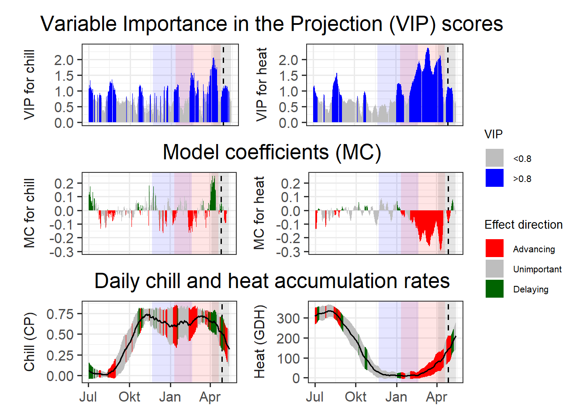
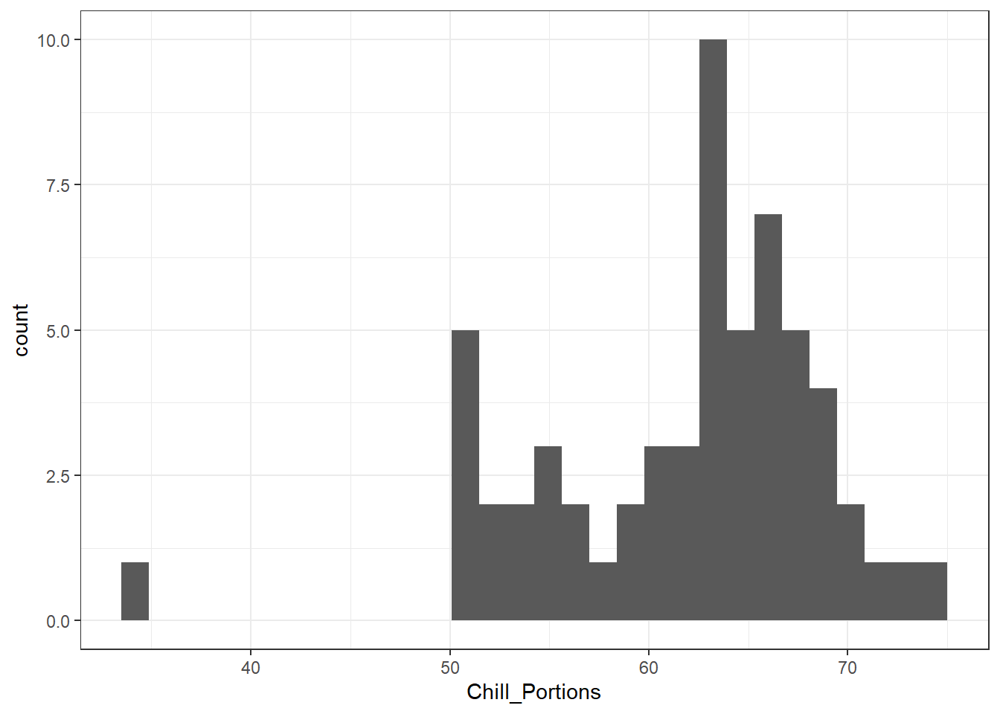
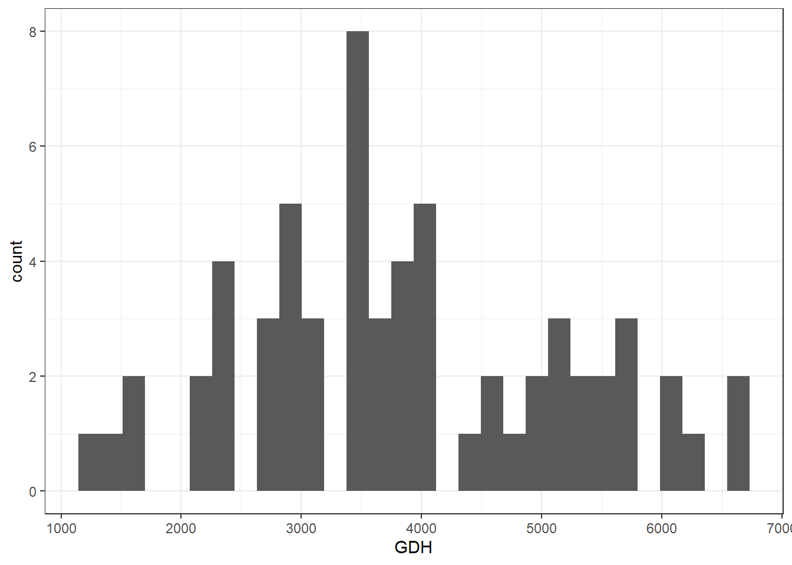
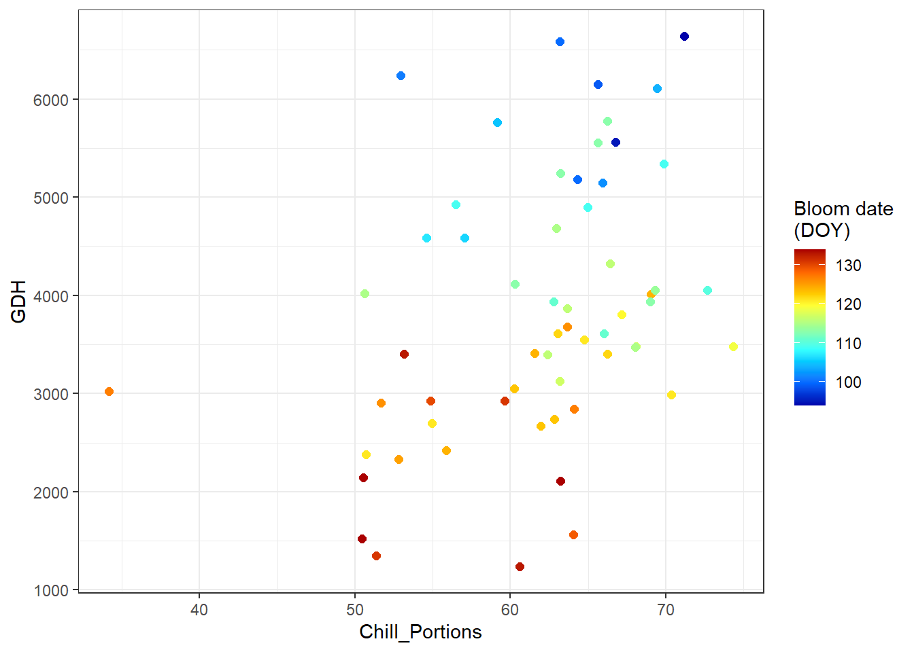
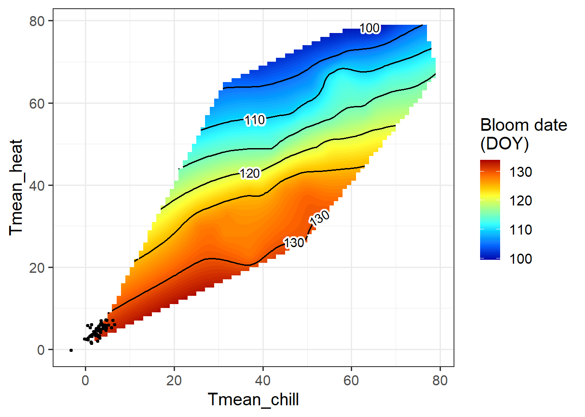

Chapter 26 — Evaluating PLS outputs
This chapter uses the Roter Boskoop dataset to assess PLS results, translating chilling and forcing phases into chill and heat requirements and showing when PLS is informative.
Reproducing analysis
Reproduce the analysis for the ‘Roter Boskoop’ dataset.
Load packages and phenology data
library(chillR)
library(tidyverse)
library(ggplot2)
library(colorRamps)
Roter_first <- read_tab("data/Roter_Boskoop_bloom_1958_2019.csv") %>%
select(Pheno_year, First_bloom) %>%
mutate(Year = as.numeric(substr(First_bloom, 1, 4)),
Month = as.numeric(substr(First_bloom, 5, 6)),
Day = as.numeric(substr(First_bloom, 7, 8))) %>%
make_JDay() %>%
select(Pheno_year, JDay) %>%
rename(Year = Pheno_year,
pheno = JDay)Load temperature data and generate hourly temperatures
temps <- read_tab("data/TMaxTMin1958-2019_patched.csv")
temps_hourly <- temps %>%
stack_hourly_temps(latitude = 50.6)Compute daily chill and heat metrics
daychill <- daily_chill(
hourtemps = temps_hourly,
running_mean = 1,
models = list(
Chilling_Hours = Chilling_Hours,
Utah_Chill_Units = Utah_Model,
Chill_Portions = Dynamic_Model,
GDH = GDH
)
)Run PLS regression using agroclimatic metrics
plscf <- PLS_chill_force(
daily_chill_obj = daychill,
bio_data_frame = Roter_first,
split_month = 6,
chill_models = "Chill_Portions",
heat_models = "GDH",
runn_means = 11
)Visualize PLS results and delineate response phases
source("data/plot_pls_ggplot.R")
plot_PLS_chill_force(
plscf,
chill_metric = "Chill_Portions",
heat_metric = "GDH",
chill_label = "CP",
heat_label = "GDH",
chill_phase = c(-40, 50),
heat_phase = c(10, 110)
)
Estimate chilling and forcing requirements
chill_phase <- c(320, 50)
heat_phase <- c(10, 110)
chill <- tempResponse(
hourtemps = temps_hourly,
Start_JDay = chill_phase[1],
End_JDay = chill_phase[2],
models = list(Chill_Portions = Dynamic_Model),
misstolerance = 10
)
heat <- tempResponse(
hourtemps = temps_hourly,
Start_JDay = heat_phase[1],
End_JDay = heat_phase[2],
models = list(GDH = GDH)
)Inspect chill and heat distributions
## `stat_bin()` using `bins = 30`. Pick better value `binwidth`.
## `stat_bin()` using `bins = 30`. Pick better value `binwidth`.
Quantify chill and heat requirements
chill_requirement <- mean(chill$Chill_Portions)
chill_req_error <- sd(chill$Chill_Portions)
heat_requirement <- mean(heat$GDH)
heat_req_error <- sd(heat$GDH)Combine chill, heat, and phenology data
metrics_by_season <- merge(
chill[, c("Season", "End_year", "Chill_Portions")],
heat[, c("Season", "End_year", "GDH")],
by = c("Season", "End_year")
) %>%
merge(Roter_first, by.x = "End_year", by.y = "Year")Plot chill vs heat colored by bloom date
ggplot(metrics_by_season, aes(Chill_Portions, GDH)) +
geom_point(aes(col = pheno), size = 2) +
scale_color_gradientn(colours = alpha(matlab.like(15)),
name = "Bloom date\n(DOY)") +
theme_bw()
Compute mean temperatures during chilling and forcing phases
mean_temp_period <- function(
temps,
start_JDay,
end_JDay,
end_season = end_JDay
) {
temps_JDay <- make_JDay(temps) %>%
mutate(Season = Year)
if (start_JDay > end_season)
temps_JDay$Season[which(temps_JDay$JDay >= start_JDay)] <-
temps_JDay$Year[which(temps_JDay$JDay >= start_JDay)] + 1
if (start_JDay > end_season)
sub_temps <- subset(temps_JDay, JDay <= end_JDay | JDay >= start_JDay)
if (start_JDay <= end_JDay)
sub_temps <- subset(temps_JDay, JDay <= end_JDay & JDay >= start_JDay)
mean_temps <- aggregate(sub_temps[, c("Tmin", "Tmax")],
by = list(sub_temps$Season),
FUN = function(x) mean(x, na.rm = TRUE))
mean_temps[, "n_days"] <- aggregate(sub_temps[, "Tmin"],
by = list(sub_temps$Season),
FUN = length)[, 2]
mean_temps[, "Tmean"] <- (mean_temps$Tmin + mean_temps$Tmax) / 2
mean_temps <- mean_temps[, c(1, 4, 2, 3, 5)]
colnames(mean_temps)[1] <- "End_year"
mean_temps
}
mean_temp_chill <- mean_temp_period(
temps,
start_JDay = chill_phase[1],
end_JDay = chill_phase[2],
end_season = 60
)
mean_temp_heat <- mean_temp_period(
temps,
start_JDay = heat_phase[1],
end_JDay = heat_phase[2],
end_season = 60
)
mean_chill <- mean_temp_chill[, c("End_year", "Tmean")]
colnames(mean_chill)[2] <- "Tmean_chill"
mean_heat <- mean_temp_heat[, c("End_year", "Tmean")]
colnames(mean_heat)[2] <- "Tmean_heat"
phase_Tmeans <- merge(mean_chill, mean_heat, by = "End_year")
Tmeans_pheno <- merge(phase_Tmeans,
Roter_first,
by.x = "End_year",
by.y = "Year")Interpolate bloom dates using kriging
library(fields)
k <- Krig(
x = as.matrix(Tmeans_pheno[, c("Tmean_chill", "Tmean_heat")]),
Y = Tmeans_pheno$pheno
)
pred <- predictSurface(k)
library(reshape2)
library(metR)
melted <- melt(pred$z)
colnames(melted) <- c("Tmean_chill", "Tmean_heat", "value")Plot bloom date response surface
ggplot(melted,
aes(x = Tmean_chill,
y = Tmean_heat,
z = value)) +
geom_contour_fill(bins = 80) +
scale_fill_gradientn(
colours = alpha(matlab.like(15)),
name = "Bloom date\n(DOY)"
) +
geom_contour(col = "black") +
geom_point(
data = Tmeans_pheno,
aes(x = Tmean_chill,
y = Tmean_heat),
inherit.aes = FALSE,
size = 0.7
) +
geom_text_contour(stroke = 0.2) +
theme_bw(base_size = 15)
Interpreting surface plots across climates
We’ve looked at data from a number of locations so far. How would you expect this surface plot to look like in Beijing? And how should it look in Tunisia?
How would this surface look in Beijing?
- Much wider temperature space
- Clear separation between:
- Cold chilling temperatures
- Warm forcing temperatures
- Strong diagonal gradient
- Both chilling and forcing effects clearly visible → PLS and surface plots would work good there
How would this surface look in Tunisia?
- Narrow and fragmented temperature space
- Chilling and forcing overlap strongly
- Large white (unobserved) regions → Chilling signal could be weak or absent → PLS struggles